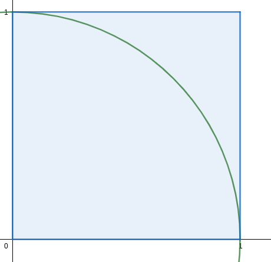
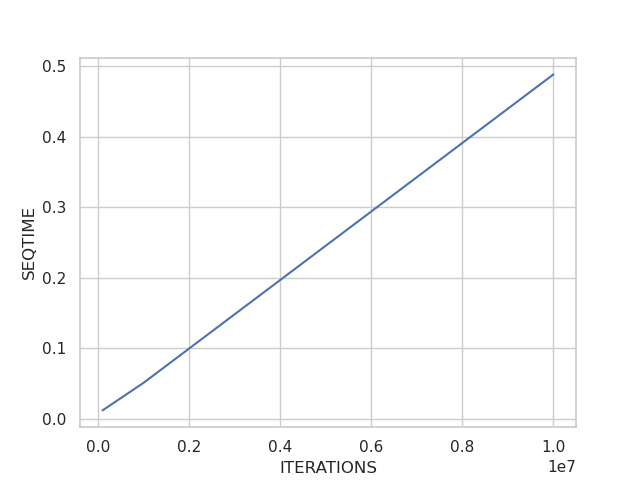
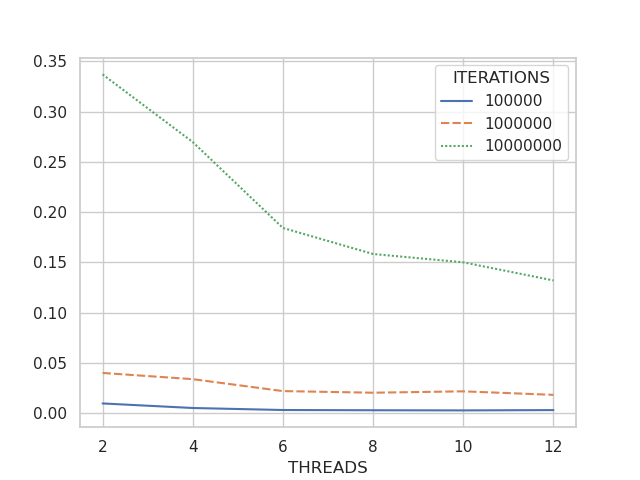
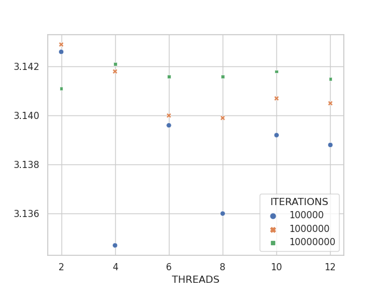
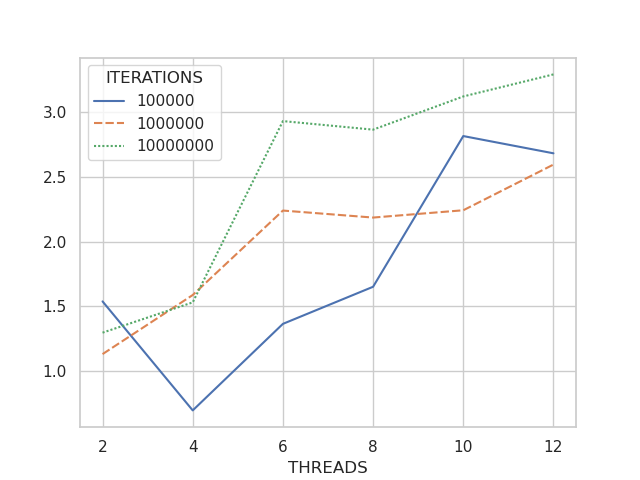

ran2 con OpenMPEl código lo puede encontrar en el siguiente link
ran2.ran2 como la clase Ran2T para usar una solución paralela.Ran2T el valor de Actualmente se conocen muchas maneras de calcular
Las simulaciones Montecarlo son algoritmos o experimentos que se basan en el muestreo de números aleatorios. Este experimento se repite un grán número de veces para estimar algo que podría ser estimado deterministicamente como
Sabemos como calcular deterministicamente el aŕea de un cuadrado y un círculo,

Figura 1. Cuadrado unitario que encierra un cuarto del círculo unitario en el primer cuadrante.
Ahora bien, si aleatoriamente pusieramos puntos dentro de este cuadrado y además conforme el número de estos puntos sea mayor, estaríamos cubriendo el área del cuadrado y el cuarto del área del círculo unitario. Encontraríamos la relación siguiente:
ran2La implementación del cálculo de
/* Programa Secuencial: no me gustaría que estuviera aquí la función pero es bueno para enseñar la diferencias*/
double t_seq_init = omp_get_wtime();
long inp = -1;
/*Calculate pi*/
long eb = 0;
long te = num_iterations;
for (int i = 0; i < te; ++i) {
float x = ran2(&inp);
float y = ran2(&inp);
if((x*x+y*y) <= 1.0)
eb++;
}
double t_seq_fin = omp_get_wtime();
std::cout << "pi es: " << (float) eb/ (float) te*4 << std::endl;
std::cout << "tiempo secuencial es: " << t_seq_fin - t_seq_init << "s" << std::endl;
inp es igual a
Ran2Para poder hacer una implementación del algoritmo de manera paralela necesitamos que cada hilo tenga su instancia de la función ran2 con un número negativo diferente para inicializar. Para eso lo implementamos como sigue:
typedef struct{
long idum;
long idum2;
long iy;
long iv[32];
} ran2NR;
class Ran2 {
ran2NR _r;
unsigned int _id;
public:
Ran2() = default;
explicit Ran2(int inum_init, unsigned int id);
float ran2T();
};
float Ran2::ran2T() {
int j;
long k;
float temp;
if(this->_r.idum <= 0){
if (-(this->_r.idum) < 1) this->_r.idum=1;
else this->_r.idum = -(this->_r.idum);
this->_r.idum2 = (this->_r.idum);
for (j = NTAB+7; j >= 0; j--) {
k = (this->_r.idum)/IQ1;
this->_r.idum = IA1*(this->_r.idum-k*IQ1)-k*IR1;
if (this->_r.idum < 0) this->_r.idum += IM1;
if (j < NTAB) this->_r.iv[j] = this->_r.idum;
}
this->_r.iy = this->_r.iv[0];
}
k = (this->_r.idum)/IQ1;
this->_r.idum = IA1*(this->_r.idum-k*IQ1)-k*IR1;
if (this->_r.idum < 0) this->_r.idum += IM1;
k = this->_r.idum2/IQ2;
this->_r.idum2 = IA2*(this->_r.idum2-k*IQ2)-k*IR2;
if (this->_r.idum2 < 0) this->_r.idum2 += IM2;
j = this->_r.iy/NDIV;
this->_r.iy = this->_r.iv[j]-this->_r.idum2;
this->_r.iv[j] = this->_r.idum;
if (this->_r.iy < 1) this->_r.iy += IMM1;
if ((temp=AM*this->_r.iy) > RNMX) return RNMX;
else return temp;
}
Ran2::Ran2(int idum_init, unsigned int id) {
this->_r.idum = idum_init;
this->_id = id;
}
Esta clase nos permitirá que cada hilo tenga su instancia de Ran2 con su respectiva función ran2T.
Representa un reto el que cada hilo tenga una instancia de ran2 con su respectiva función ran2T con diferentes números negativos. Esto podemos solucionarlo haciendo un arreglo de instancias de ran2T con número de inicialización asociado al hilo donde corre pero negativo para que cada hilo tenga una secuencia de números diferentes.
Además para guardar el número de puntos en el círculo debemos usar una reducción, este no es necesario que por hilo tenga su propio contador ya que comparten para la solución final el mismo denominador
La implementación es como sigue:
/*Crear vector de clase Ran2 e inicializar*/
double t_seq_par_init = omp_get_wtime();
auto *rans = new std::vector<Ran2>();
int num_threads = omp_get_max_threads();
for (int i = 0; i < num_threads; ++i) {
rans->emplace_back(Ran2(-((int) i+1), i));
}
/*Imprimir tamaño de vector*/
// std::cout << "tamaño de vector después de inicialización: " << rans->size() << std::endl;
/*Calculo de pi*/
int ebT=0;
#pragma omp parallel for default(none) shared(rans, num_iterations) reduction(+:ebT)
for (int i = 0; i < num_iterations; ++i) {
/*Debug printing*/
// printf("indice: %d\t", i);
// printf("thread: %d, ran2=%f\n",thread_num, rans->at(thread_num).ran2T());
int thread_num = omp_get_thread_num();
float x = rans->at(thread_num).ran2T();
float y = rans->at(thread_num).ran2T();
if((x*x+y*y) <= 1.0)
ebT++;
}
std::cout << "pi es: " << (float) ebT/ (float) num_iterations*4 << std::endl;
double t_seq_par_fin = omp_get_wtime();
std::cout << "tiempo paralelo es: " << t_seq_par_fin - t_seq_par_init << "s" << std::endl;
En el ejemplo secuencial el valor de inicio es Ran2 para el hilo 0. ESto significa que si ejecutamos para un solo hilo. La solución secuencial y la paralela deberían coincidir los resultados. Ejecutando para un solo hilo y los siguientes número de puntos 1000, 10000, 100000, 1000000, 10000000.
pi secuencial es: 3.104, tiempo secuencial es: 0.000148441s, pi paralelo es: 3.104, tiempo paralelo es: 0.000375351s
pi secuencial es: 3.1524, tiempo secuencial es: 0.000661592s, pi paralelo es: 3.1524, tiempo paralelo es: 0.00110507s
pi secuencial es: 3.14636, tiempo secuencial es: 0.0066691s, pi paralelo es: 3.14636, tiempo paralelo es: 0.009459s
pi secuencial es: 3.14155, tiempo secuencial es: 0.0533191s, pi paralelo es: 3.14155, tiempo paralelo es: 0.0656643s
pi secuencial es: 3.14173, tiempo secuencial es: 0.429616s, pi paralelo es: 3.14173, tiempo paralelo es: 0.655632s
Observamos que obtenemos el mismo valor de
Se ejecutó para los número de puntos 100000, 1000000 y 10000000 con 2,4,6,8,10,12 hilos. A continuación se presentan la gráfica con los resultados.

Figura 2. Iteraciones contra tiempo en segundos de la solución secuencial para el número de puntos generados 100000, 1000000 y 10000000. Aunque no se observan los puntos claramente, queda demostrado que la complejidad del problema secuencial es lineal.

Figura 3. Número de hilos contra tiempo de ejecución en segundos con su curva respectivamente etiquetada con el número de puntos generados. Podemos notar como el tiempo de ejecución se reduce con cada aumento de hilos de 2 a 12.

Figura 4. Valor de

Figura 5. Aceleración contra número de hilos etiquetados por el número de puntos creados. Se observa que en general conforme aumentamos el número de hilos usados la acelaración crece como se esperaba.
Los resultados encontrados apuntan a una buena implementación de la solución tanto secuencial como paralela. Se redujo el tiempo de ejecución usando paralelismo que es más notorio cuando se crean más número de puntos.
Con respecto a la aceleracíon, encontramos lo que se esperaba excepto porque la aceleración para 100000 puntos creados con 2 hilos es mayor que el de 4. Esto podría deberse a que el tiempo por overhead fue mayor que el tiempo de ejecución secuencial por el hecho de haber usado pocos puntos.
Sería interesante para un mayor número de puntos de tal manera que encontraramos tiempos de ejecución de minutos, sin embargo, con el número de puntos resulta suficiente para presentar resultados que en general son como esperabamos.